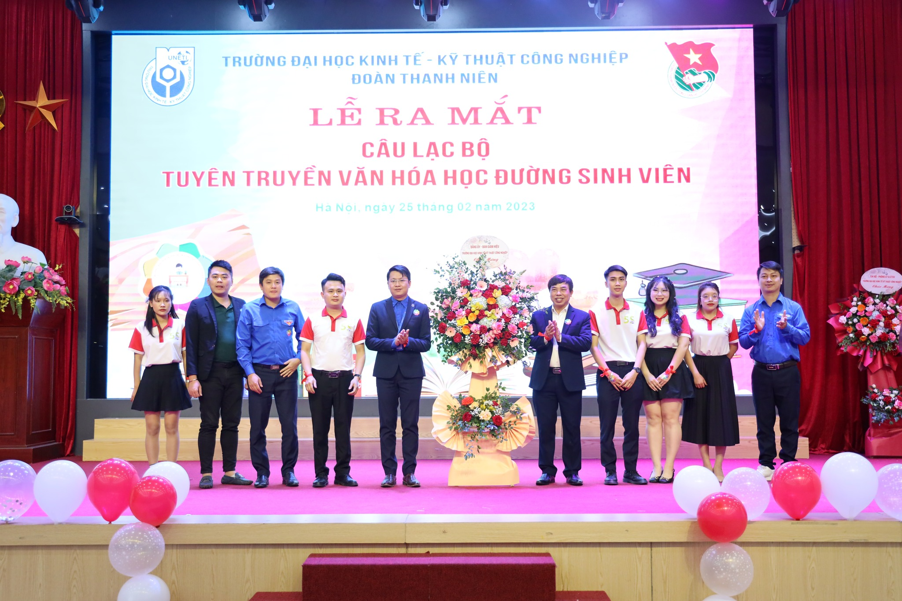

Ngày 25/2/2023
Một bước đi mới

CLB Tuyên truyền Văn hóa học đường Sinh viên đã được thành lập! Đây chính là phiên bản nâng cấp của "Đội tình nguyện tuyên truyền và thực hiện Văn hoá học đường Sinh viên UNETI" được ghi lại dấu ấn lớn cho nếp sống văn minh, thanh lịch, phát triển của văn hoá học đường trong môi trường đại học sau này!